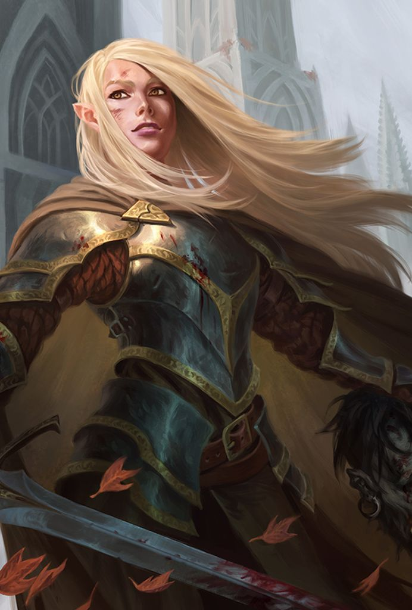

Wood Elf | Paladin | Lawful Good

Traits, ideals, bonds, flaws...
Ellawain Vikvander was an elf. A Wood Elf, to be precise. Which meant she had pointy ears, good eyesight, a swift stride, and the general disposition of a stray cat that sometimes decided to like you. She also had a sword now, which made things interesting.
The Hearth and the Wilds - But before all that—before the sword, before the armor, before she started talking to trees and smiting things with righteous fury—she was just an undersized kid with sticky fingers, a charming smile, and an empty stomach. That’s what happens when you’re a small girl, orphaned and alone in a town outside of Lyrabar, a city filled with Important People doing Important Things. None of those things involved feeding Ellawain. So she stole, she swindled, and she conned. Bread, mostly. A little cheese if she got lucky. Some coins here and there, but nothing too big—people don’t miss bread the way they miss money. And then she tried to steal from the wrong person. Or maybe the right person. Who knows?
Her name was Andrisa. She was a baker, mid-thirties, and very much alive at the time. She caught Ellawain in the act, and instead of turning her in, she handed her a warm loaf of bread and said something that changed her life forever: “Eat.” So she did. And just like that, she had a home.
Andrisa was a good woman. Maybe too good for the world. She too had lost people: A son and husband. She put Ellawain to work kneading dough, sweeping floors, waking up at unholy hours to bake things for people who didn’t appreciate it. But she also told stories—about the old ways, the Green Faith, the natural order, the balance of things. “Everything has its place,” she said. “Even the things that seem lost.” Ellawain liked that idea. It was nice. It also turned out to be completely untrue. Because one summer, Ellawain's sixteenth with Andrisa, the crops failed.
A Dark Winter - That winter Ellwain's nemesis returned: Hunger. Andrisa kept baking as long as she could, but flour comes from wheat and doesn’t grow on trees in the cold months. The people of the small town lined up at the bakery for a loaf, a slice, a crumb. But there was none. Not for any price. And the merchants of Lyrabar, the ones with full bellies and fat purses, decided they could make them fatter by hoarding grain. The town starved. So Ellawain did what she used to do. She schemed. She conned. She stole. Just a little. Just enough to help the town battle back the ferocious monster that is starvation. And it worked. Until it didn't.
Lord Vramor happened. Greedy as the greatest wyrm, ugly as the greenest troll, and meaner than a mind flayer, Vramor was the kind of man who liked to see people suffer just to remind them who was in charge. Of all the blood-sucking merchants, he had to be the one catch on to her scams. Instead of punishing Ellawain, he punished Andrisa. He burned the bakery down. Watched it turn to cinders, smoke, and ash. Andrisa didn’t survive much longer after that. Many in the town didn't. Many more left. The town died. Ellawain buried her beneath an ancient oak tree, a mile from town. Sat there for three days, waiting for something—an answer, maybe. A reason.
Instead, she got a vision - A glowing, shifting, god-knows-what kind of figure—elf, beast, light, something ancient and huge and terrifying—stood before her. It didn’t say anything. It didn’t have to. The meaning was clear: Get up. Do something. So she did. She left. Went into the woods.Traveled deep into the wilds, following the whispers of the forests and the pull of something greater. There, she found a druidic circle that recognized the mark upon her soul. They trained her—not as a druid, but as a warrior of the ancient ways, a protector of light in dark places. She swore her Oath beneath the same oak where she had laid Andrisa to rest, vowing to be the guardian that she had needed as a child and the defender that Andrisa had deserved.
With a blade wreathed in the green glow of the old magic and armor that bore the sigils of the wilds, Ellawain Vikvander walked forth—not as a thief, not as a baker’s daughter, but as a Paladin of the Ancients. And if some noble prick thought he could burn down someone else’s home, well, she had a sword now.